Культовые вещи из 90-х, за которыми нельзя не скучать.
Игровая приставка Dendy
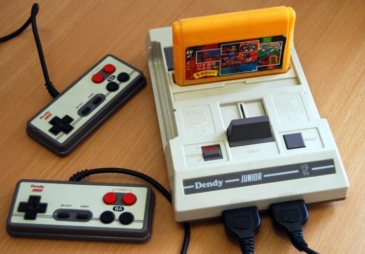Ни ода современная игровая консоль с умопомрачительной графикой и ни один мощный игровой компьютер не доставят вам сегодня столько удовольствия, сколько можно было получить, играя в видеоигры «Черный плащ» или «Контра». Самой страшной трагедией был выход из строя джойстиков, которые приходилось «лечить» самостоятельно, чтобы не тратить солидную сумму на новые.
Жвачка «Love is…»
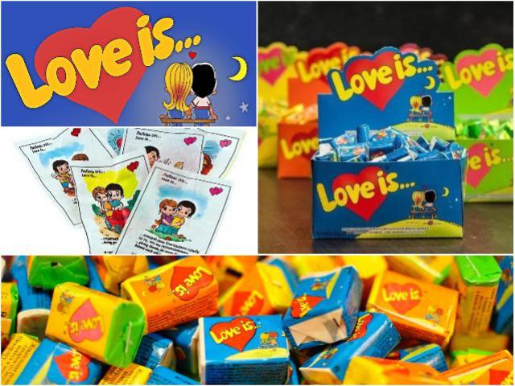Яркие разноцветные кубики жвачек – неотъемлемая часть символов 90-х. Оригинальность их была в том, что они имели не только целый набор вкусовых качеств, но и красочные вкладыши. Эти вкладыши любили коллекционировать подростки. Каждый кубик жвачки имел вкус двух фруктов и был упакован в обертку соответствующего цвета. Ну и конечно вкладыши, ведь ради них часто и покупалась жвачка.
Игрушка «Радуга»
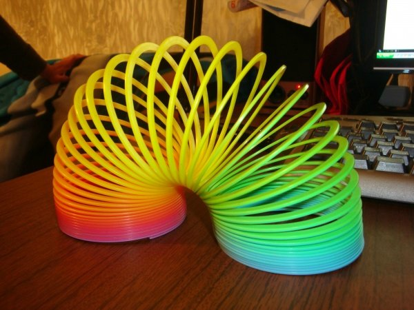Разноцветную пластиковую пружину «Радуга» можно сравнить по популярности и бесполезности с современным спиннером. Кроме перекидывания из руки в руку, ее можно было запустить по ступенькам. Если везло — девайс полностью проходил лестничный марш, вызывая восторг владельца и зависть менее успешных конкурентов.
Прокат видеокассет
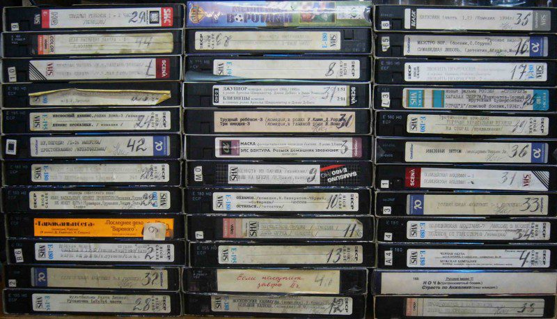Когда все свои и все одолженные у друзей видеокассеты просмотрены по несколько раз, единственным выходом был поход в видеопрокат, к «пиратам XX века». Халтурное качество видео и гнусавый перевод не могли омрачить светлый праздник приобщения к киноискусству. Не смущало даже то, что в качестве залога приходилось оставлять незнакомому дяде свой или родительский паспорт.
Компьютер ZX Spectrum
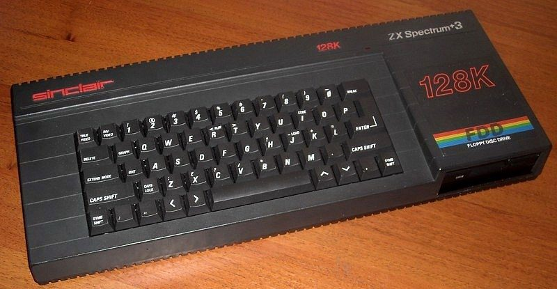Компьютер, с которого для многих отечественных IT-гениев начиналось знакомство с цифровыми технологиями. Те, кому повезло, обладали устройством с флоп-дисководом под дискеты, а тот, у кого была модель попроще, был вынужден колдовать с шнурами и магнитофонами, загружая программы с кассет.
Yo-yo Coca-Cola Galaxy
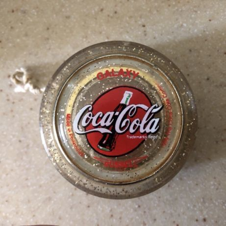В суровых 90-х даже учащиеся младших классов понимали, что не все можно купить за деньги. Например йо-йо Coca-Cola Galaxy можно было только выиграть, до посинения опустошая бутылки с популярным газированным напитком. Зато если посчастливится, проблем с тем, чем занять свободное время не возникало — колесо на веревочке открывало широчайшие возможности для импровизаций.
Тетрис
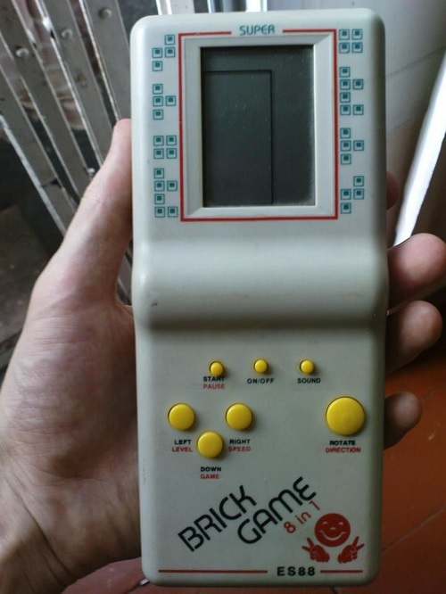Еще одна чудесная игрушка, навязчивый звук которой даже спустя 30 лет узнает каждый ее бывший владелец. Обладать такой штукой хотели все, от мала до велика и иногда из-за турниров в тетрис оказывались парализованы офисы достаточно серьезных компаний.
Жвачка «Turbo»
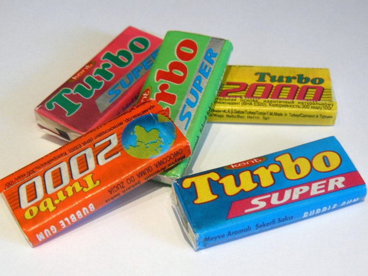Одну из самых популярных жевательных резинок в 90-е годы в России производила турецкая компания Kent Gida. Выпуск Turbo начался еще в середине 80-х. Первые серии были со вкусом персика, позднее появились и другие фруктовые отдушки. Вкладыши Turbo с фотографиями автомобилей или мотоциклов до сих пор являются объектами маниакального коллекционирования. Самая первая серия вкладышей "Турбо" является одной из самых дорогих — стоимость вкладыша может доходить до $250 в зависимости от состояния и номера экземпляра.
Кассетный плеер
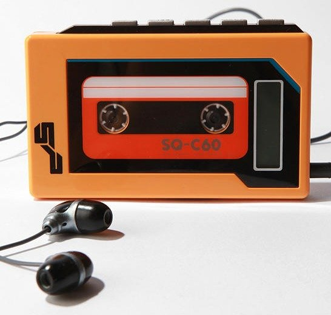В 90-х годах в России у каждого меломана обязательно был портативный кассетный аудиоплеер, который можно было брать с собой, чтобы в любое время наслаждаться любимой музыкой. В нашей стране такие плееры продавались вплоть до конца 90-х годов, несмотря на то, что во всем мире уже пользовались популярностью CD-плееры, которые постепенно вытеснили кассетные аудиоплееры с рынка.
Тамагочи
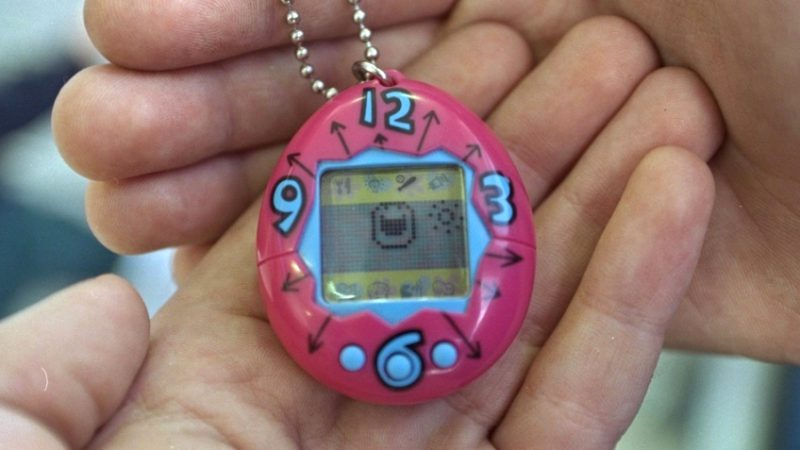Эта маленькая непонятная вещь с примитивным экраном являлась для детей и подростков 90-х неисчерпаемым источником стресса. Электронный питомец внутри пластикового яйца был капризен и прихотлив, поэтому кормить и развлекать его приходилось едва ли не круглые сутки. Да, смерть питомца была серьезной личной трагедией даже для вполне взрослых людей.
Растворимые напитки
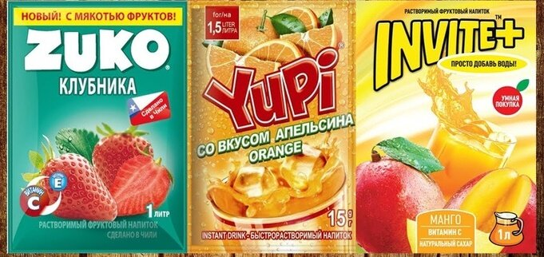Сейчас это звучит странно, но в начале 90-х далеко не все могли позволить себе "Пепси", "Кока-Колу" или "Фанту". Так, в апреле 1993 года двухлитровая бутылка "Пепси" стоила 700 рублей, то есть 1 доллар. При этом поездка на междугороднем автобусе на 200 километров стоила около 100 рублей, а средняя зарплата составляла всего несколько тысяч рублей. По сути, сладкая импортная газировка для большинства населения была тогда чуть не предметом роскоши. Однако народ страстно желал иметь на праздничном столе нарядную запивку, и выход нашелся. В страну завезли растворимые напитки, самым знаменитым из которых стал "Инвайт". Думаю, все, кто жил в 90-е после упоминания этого названия автоматически добавили к нему: "Просто добавь воды".
Модем Dial-up
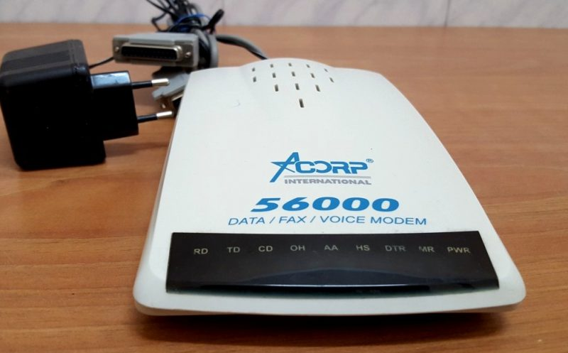Нет, это не Wi-Fi роутер и не цифровая приставка к телевизору, а самый настоящий модем dial-up, работающий с телефонной линией. Небольшое изображение размером 50-60 килобайт с его помощью можно было скачивать 10-30 минут, если повезет. Иногда девайс выдавал совершенно фантастическую скорость, из-за чего на мониторах появлялись вот такие вызывающие отчаяние окна.
Фотоаппарат Polaroid
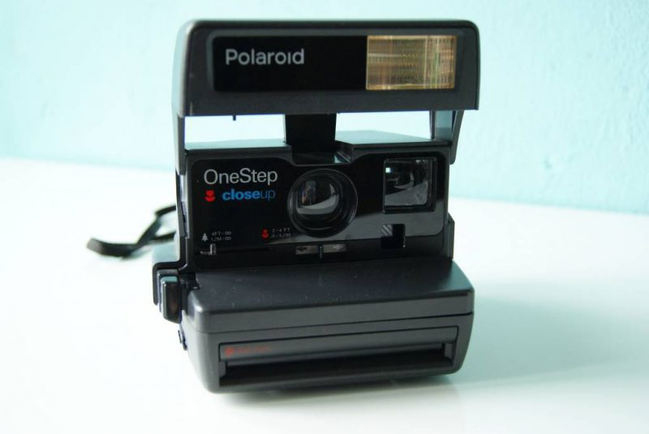Если в 70-х и 80-х пределом мечтаний фотолюбителя были «зеркалки» «Киев» и «Зенит», то в последнее десятилетие XX века несомненным хитом фотодела стали «Полароиды». Владелец камеры, выдающей мгновенные снимки, был желанным гостем на свадьбах, днях рождения и любых других мероприятиях. Кстати, кассеты для камеры иногда было сложнее достать чем само чудо техники.
Наручные часы Casio с калькулятором
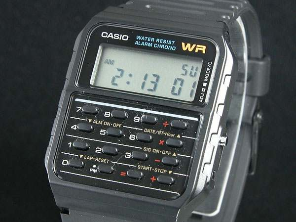Если носить часы «Монтана» с 16-ю мелодиями было просто признаком хорошего тона, то электронные часы с калькулятором, дорогие и дефицитные были уделом «элиты». И даже неважно, что из-за крошечных кнопок пользоваться ими было непросто — сама вещь являлась невероятно статусной.
Фотопленка

В наши дни еще есть фотографы старой закалки, которые снимают пленочными фотоаппаратами. Достать пленку сегодня почти так же просто как живую и мертвую воду, поэтому молодое поколение в лучшем случае вспомнит что это такое, а в худшем — пожмет плечами.